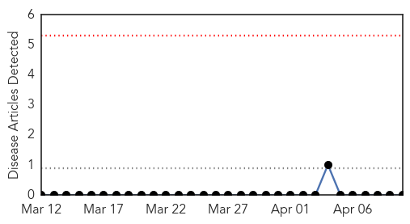

West Nile Virus
30-Day Web Trend
0 alerts, 0 warnings

30-Day Twitter Trend
0 alerts, 0 warnings

Article Locations

Article Confidences

Top Articles:
-
No articles found for Apr 10, 2014
Top Tweets:
-
No tweets found for Apr 10, 2014
Influenza
30-Day Web Trend
1 alerts, 0 warnings

30-Day Twitter Trend
0 alerts, 0 warnings

Article Locations

Article Confidences

Top Articles:
- 0.977
- UK scientists slam flu drug in ongoing debate
- 0.958
- Flu drugs may not be worth stockpiling – The Chart
- 0.956
- NIH funds influenza research and surveillance network
- 0.955
- Lassa virus was unwanted passenger on N.Y.-Mpls. flight
- 0.953
- Tamiflu and Relenza review questions effectiveness against flu
- 0.949
- Is stockpiling pandemic flu drugs shrewd or misguided?
- 0.948
- Researchers at five sites receive NIH funding for influenza research
- 0.948
- Tamiflu: drugs given for swine flu 'were waste of £500m'
- 0.945
- Deadly H5N1 bird flu needs just 5 mutations to spread easily in people
- 0.885
- Government stockpiles flu medicine, but does it work?
- 0.880
- Millions Wasted On Flu Drug, Claims Major Report
- 0.854
- UPDATE 1-Stockpiles of Roche Tamiflu drug are waste of money, review finds
- 0.845
- Antiviral drug stockpile a waste of money, says study
- 0.834
- Millions of dollars wasted on flu drug Tamiflu, review finds
- 0.830
- Stockpiles of Roche Tamiflu drug are waste of money, review finds
- 0.824
- Researcher raises questions about flu drug benefits
- 0.817
- Tamiflu not as effective as promised: researchers
- 0.803
- Stockpiles of flu drug a waste of money, review finds
- 0.793
- Antiviral drug stockpile a waste of money, says study
- 0.770
- Video: Tamiflu: Government 'must listen' to findings
- 0.689
- Scientists Publish Recipe For Making Bird Flu More Contagious
- 0.689
- Scientists Publish Recipe For Making Bird Flu More Contagious
- 0.689
- Scientists Publish Recipe For Making Bird Flu More Contagious
- 0.689
- Scientists Publish Recipe For Making Bird Flu More Contagious
- 0.689
- Scientists Publish Recipe For Making Bird Flu More Contagious
- 0.689
- Scientists Publish Recipe For Making Bird Flu More Contagious
- 0.689
- Scientists Publish Recipe For Making Bird Flu More Contagious
- 0.689
- Scientists Publish Recipe For Making Bird Flu More Contagious
- 0.689
- Scientists Publish Recipe For Making Bird Flu More Contagious
- 0.665
- Taiwan Culls Poultry to Prevent Spread of H5N3 Bird Flu
- 0.612
- White House Expert: Global Health Is National Security Issue
- 0.578
- Ministry defends stockpiling flu drug
Top Tweets:
-
No tweets found for Apr 10, 2014